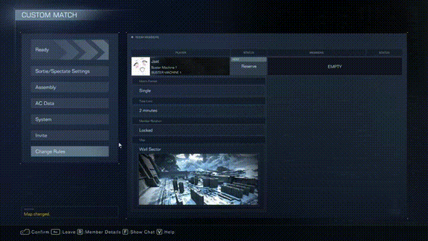

I build production AI products that feel fast, reliable, and real.
Founding / full-stack engineer based in Bristol, focused on taking AI systems from idea to production. My work spans agent tooling, orchestration, local/cloud architectures, payments, auth, and the product polish needed to make complex systems usable.
Engineering with product taste
I enjoy building systems that are technically strong underneath and simple to use on the surface. That usually means careful work on performance, safety, architecture, and developer experience — not just the shiny demo layer.
Core stack
TypeScript, JavaScript, Python, SQL, Node.js, React, Redux Toolkit, React Query, Postgres, SQLite, Supabase, WebSockets, Electron, and cloud integrations.
AI & platform work
OpenAI, Anthropic, Gemini, OpenRouter, tool-calling workflows, local inference, secure auth, observability, payments, and shipping production systems end-to-end.
Projects I’m proud of
Hyper agent, and a mix of embedded systems, applied AI, and practical tools built to solve real problems.
Graviton
Memory-native AI workspace where conversations become persistent project state, with branching chats, local-first context, and a full agent harness.

Receipt Parsing Shopping App
Mobile workflow combining OCR, machine vision, and LLMs to turn receipts into useful shopping lists and budget tracking.

Private LAN Server
Personal cloud and media server for browser-based file access, streaming, uploads, auto-zipping, and device-to-device sharing.

Smart LED Control System
WS2812B LED driver architecture using master/slave control over I2C to scale smart lighting control across longer ranges.

Dynamic Game Jukebox
Machine learning system that reacts to gameplay visuals and adapts music dynamically without requiring game file changes.
What I bring to a team
I’m strongest where software engineering, AI systems, and product thinking overlap.
Production mindset
I care about reliability, observability, performance, and safe rollout — not just getting something working once.
End-to-end ownership
Comfortable moving from frontend and backend to infra, auth, billing, deployment, and developer tooling.
Fast learning loop
I like learning new systems quickly, testing ideas in practice, and turning rough prototypes into cleaner products.